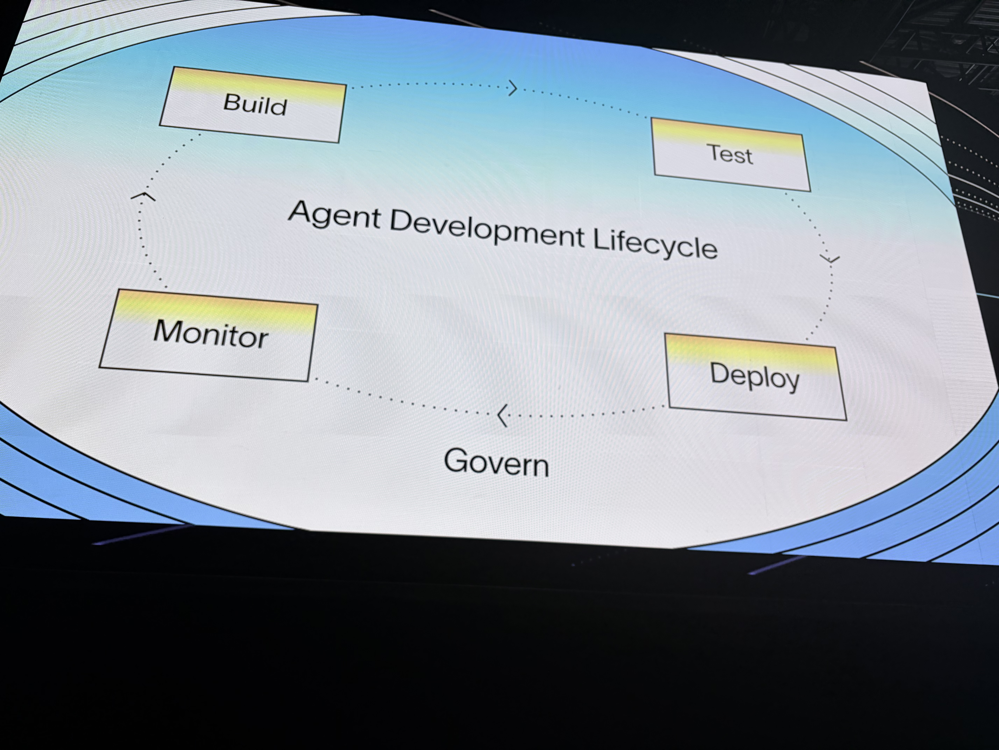
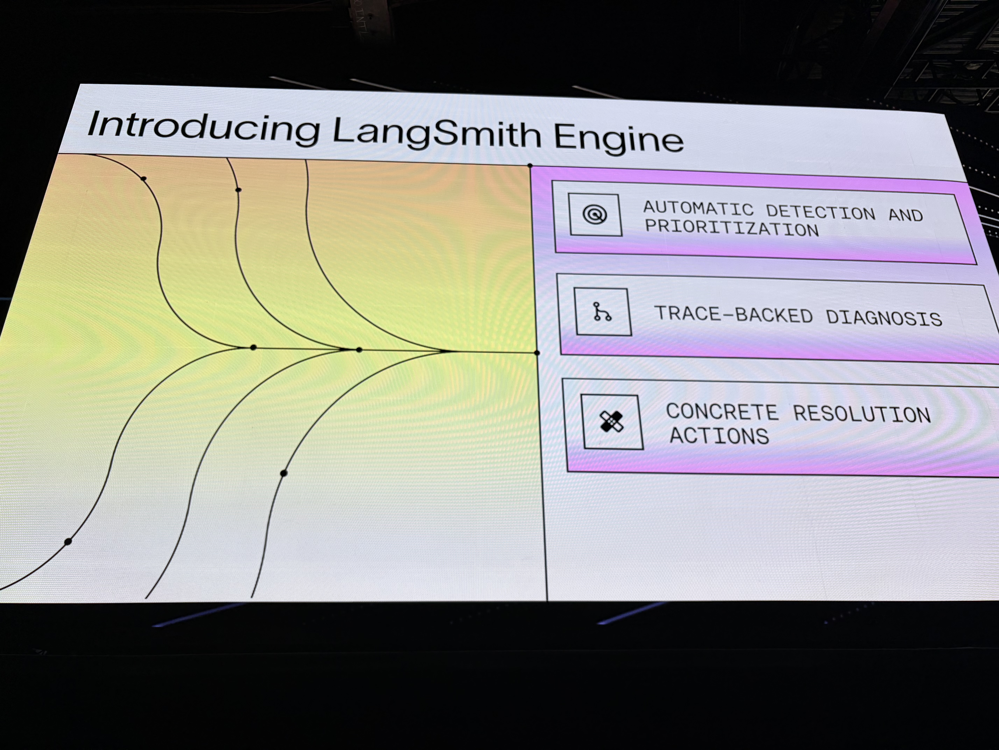
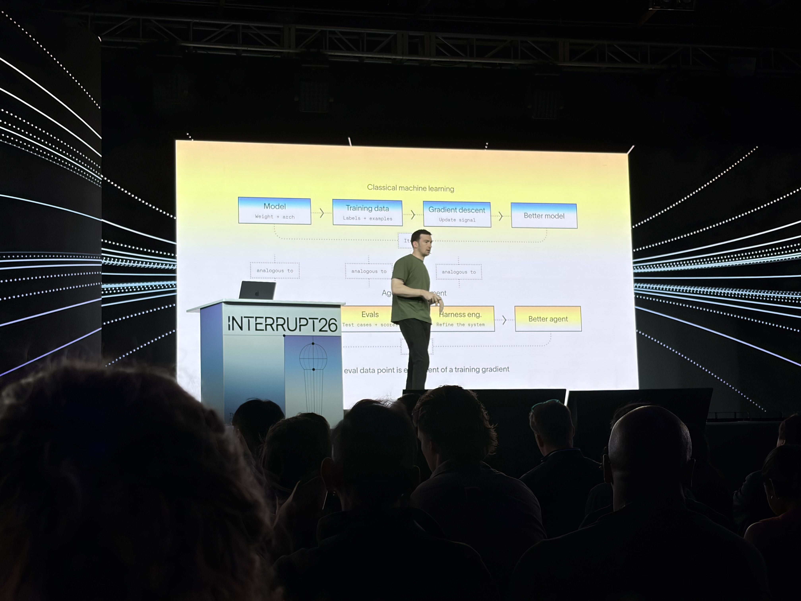
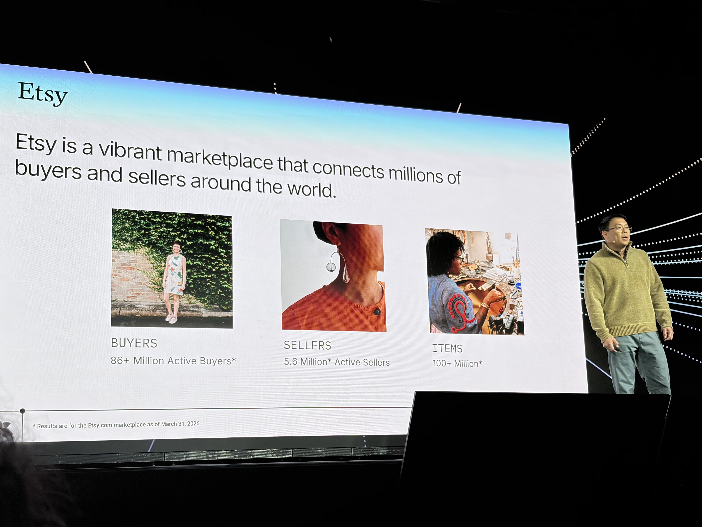
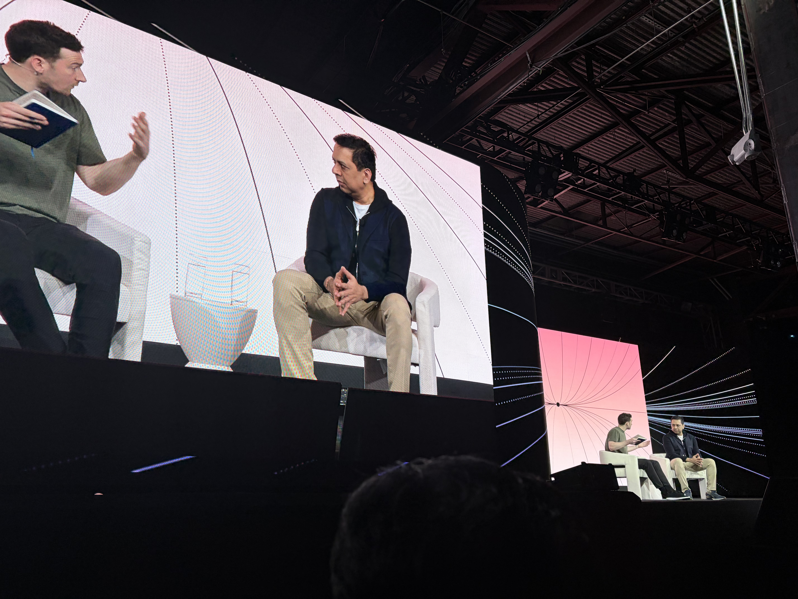

1. LangSmith Engine
production traces から recurring issue を発見し、root cause、修正案、evaluator、dataset examples へつなげる改善ループ。重要なのは、問題を大量に見つけることではなく、意味があり修正可能な単位に蒸留すること。
AI agent の関心が「作れるか」から「本番でどう動かし、観測し、改善し続けるか」へ移ったことを示すイベント。セッション内容とレポート配信での議論を統合して整理した。
LangChain Interrupt 2026 の中心メッセージは、agent はリリースして終わりではなく、trace、eval、feedback、memory、skills、tools を通じて育て続ける対象だということだった。通常のソフトウェアと比べ、agent はモデル、ツール、プロンプト、コンテキスト、外部環境の変化で挙動が変わりやすい。そのため、本番投入後に何が起きたかを観測し、問題を発見し、修正し、再発を防ぐ継続的な仕組みが必要になる。
Keynote で発表された LangSmith Engine、SmithDB、LangSmith Sandboxes、Managed Deep Agents、LLM Gateway、Context Hub、Deep Agents 0.6 は、個別機能ではなく production agent のライフサイクルを支えるスタックとして見ると理解しやすい。
現地写真は、追加された img 配下の写真のEXIF時刻をもとにセッションへ対応づけた。EXIF時刻はJST相当で記録されていたため、San Francisco 現地時刻（PDT）へ変換して公式タイムテーブルと sessions の動画・書き起こし名で照合している。





| 推定セッション | 現地時刻（PDT） | 写真 |
|---|---|---|
| Day 1 Keynote | 2026-05-13 09:45-10:21 | IMG_3845-IMG_3849 |
| Day 2 Keynote | 2026-05-14 09:46-09:49 | IMG_3852-IMG_3853 |
| Observing and Testing CX Agents | 2026-05-14 10:03 | IMG_3854 |
| The Etsy Gifting Assistant | 2026-05-14 10:51 | IMG_3855 |
| 60% Faster Time-to-Interview | 2026-05-14 11:12 | IMG_3856 |
| Future of AI Agents | 2026-05-14 13:01-13:02 | IMG_3857-IMG_3861 |
| Agents in the Enterprise | 2026-05-14 13:34 | IMG_3862 |
| Building AI for Healthcare | 2026-05-14 14:05-14:21 | IMG_3863-IMG_3880 |
| Break / hallway | 2026-05-14 14:47 | IMG_3881 |
| The Return of the Data Scientist | 2026-05-14 15:52 | IMG_3882 |
下から順に見ると、Context Hub、LangSmith Sandboxes、LLM Gateway が agent の context・execution・governance を支え、Deep Agents 0.6 / Managed Deep Agents が runtime を作る。SmithDB が実行結果を観測可能にし、LangSmith Engine がその観測結果から改善を自動化する。
production traces から recurring issue を発見し、root cause、修正案、evaluator、dataset examples へつなげる改善ループ。重要なのは、問題を大量に見つけることではなく、意味があり修正可能な単位に蒸留すること。
agent traces は深く、大きく、multi-turn / multimodal で、従来の logs / metrics と異なる。SmithDB はこの workload に特化した LangSmith のデータ基盤で、Rust、Apache DataFusion、Vortex を土台にしている。
agent が生成したコードを隔離環境で実行するための基盤。1秒未満の起動、persistence、snapshot / restore、auth proxy などが紹介された。
Deep Agents harness を production runtime として運用するための private beta。agent creation / update / invoke、horizontal scaling、checkpoint、resume、human-in-the-loop を扱う。
モデル呼び出しの cost visibility、spend limits、credential management、routing を担う。将来的に frontier model、open weight model、特化モデルの使い分けが増えるほど重要になる。
prompt だけでなく、AGENTS.md、SKILL.md、社内 knowledge を versioned context として管理する。production agent に「何を知って動くか」を安定して供給する層。
open models、execution environment、streaming の強化が語られた。長時間・複雑なタスクを解く harness として、subagents、filesystem、code interpreter、frontend SDK が重要になる。
agent development lifecycle と新機能発表が中心。build / test / deploy / observe / improve を高速に回すためのスタックが示された。
SmithDB の背景。agent trace は巨大で深く、検索・フィルタ・random access が必要なため、専用データ基盤が必要になる。
GTM agents の価値は email generation ではなく、market signal を読んだタイミングと文脈判断。durable execution、capacity management、online eval が鍵。
Toyota Production System を agent 開発へ移植。andon は observability、kaizen は継続改善、jidoka は human-in-the-loop、genchi genbutsu は trace に対応する。
ユーザーをテストデータにせず、launch 前に simulator、mocked MCP data、synthetic user、rubric-based evaluator で品質ゲートを作る。
legal / compliance を eval 作成に継続参加させる。risk を domain / category / concrete risk に分解し、dataset と judge prompt へ変換する。
agent harness は model に right context at the right time を与える層。execution、context、delegation、steering が中心能力。
LangSmith Engine の設計。production traces から issue / fix / eval / dataset をつなぐ self-healing loop をどう作るかが語られた。
recap 配信では、現地の熱量と Keynote 発表の解釈が中心に語られた。会場は昨年と同じ The Midway で、参加者数は体感で昨年の約1.5倍。LangChain グッズを身につけた参加者が多く、Harrison Chase が登場すると強い歓声が起きるほど community のエンゲージメントが高かった。
日本から見る LangChain と、米国現地の LangChain community には温度差があるという指摘もあった。日本では hyperscaler や既存クラウドの文脈でAI基盤を見ることが多いが、現地では LangChain 自体に fandom 的な熱量があり、ambassador network も活発に機能している。
配信での重要な見立て: agent は「開発するもの」ではなく「育てるもの」。最初の種は coding agent で素早く作れるようになってきたが、本当に大きい仕事は、リリース後に experience learning を回し、trace と eval を使って現実の業務に fit させていくことにある。
FDE については、AI agent の開発・運用ケイパビリティを自社に持つ企業と、持たない企業に分かれていくという見立てが共有された。Non-AI な企業に agent を導入する場合、ユースケース発見、workflow 設計、eval / observability / deployment の運用設計まで伴走する FDE 的役割は必要になる。一方で、LangChain がそれを大々的な採用方針にするかは、まだ決めかねているという印象だった。
Deep Agents については、agent のパラダイムが2つに分かれつつあるという議論があった。1つはユーザー体験を高める copilot / chatbot 型、もう1つは長時間実行して複雑なタスクを解く Deep Agents 型である。必要な実装や評価の仕組みが異なるため、両者を分けて設計する必要がある。